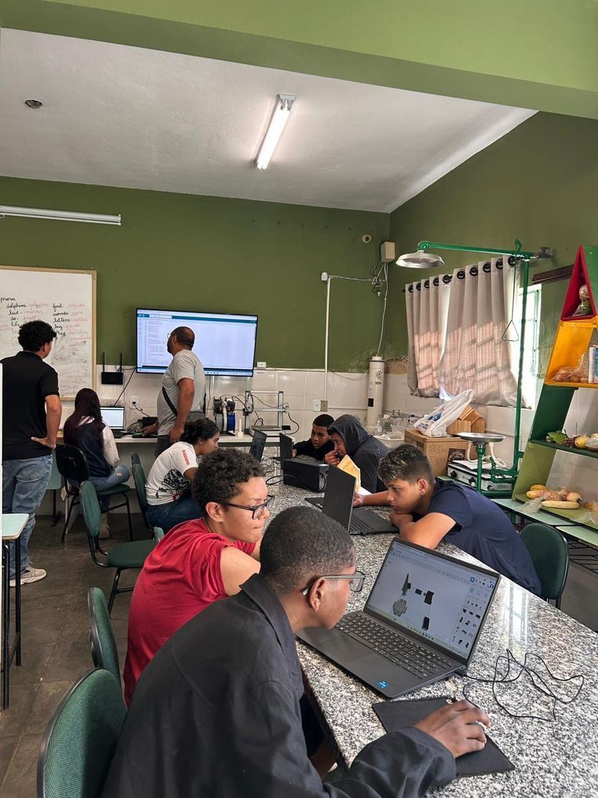
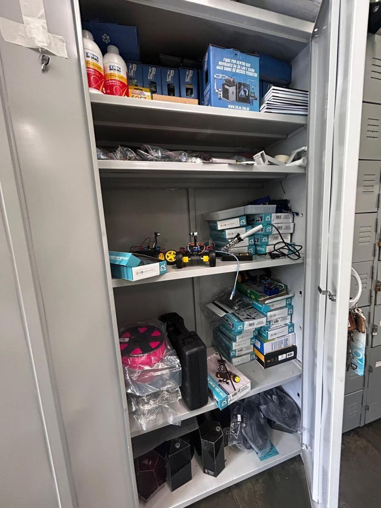
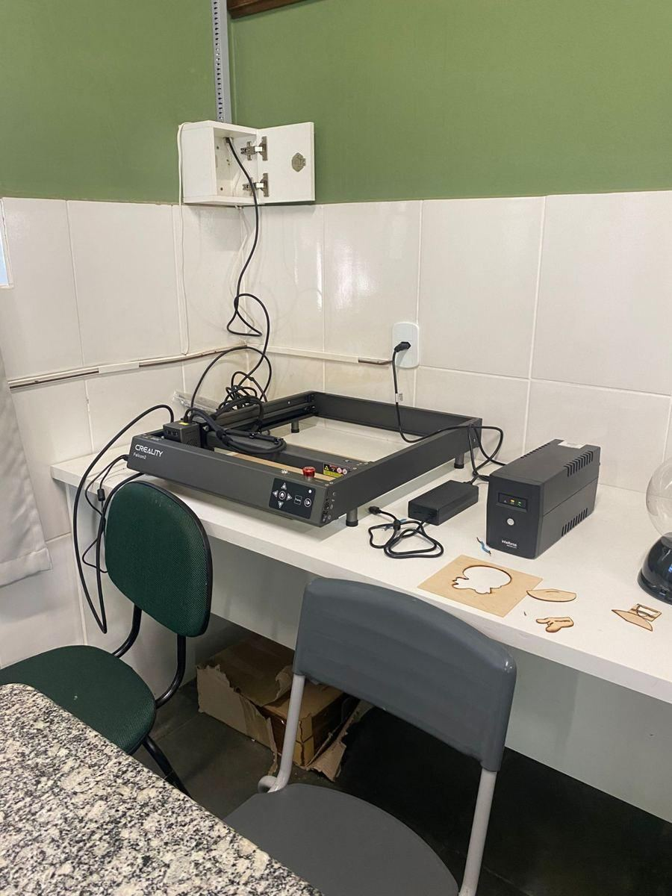

Sobre o projeto
História do laboratório
O laboratório de robótica da Escola Estadual José Bonifácio reúne alunos que aprendem fazendo: montam robôs, programam placas e testam suas ideias na prática.
Objetivos pedagógicos
- Incentivar a pesquisa e a criatividade.
- Ensinar lógica, programação e eletrônica de forma prática.
- Trabalhar em equipe e valorizar o trabalho de cada aluno.
Equipe orientadora
Os professores e orientadores do projeto serão apresentados aqui.

Kits e equipamentos

